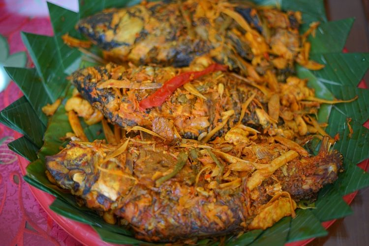

Local Food
Arsik (Surat Batak: ᯀᯒ᯲ᯘᯂᯪ᯲) adalah salah satu hidangan khas masyarakat Batak atau yang disebut juga dengke na niarsik yang memiliki arti ikan yang dimasak hingga kering. Kata "arsik" berasal dari cara memasak hidangan ini yaitu "mangarsik" yang berarti hidangan ikan disiram-siram atau diguyur selama proses memasak. Masakan ini adalah simbol karunia bagi masyarakat Batak dan akan dihidangkan saat acara adat seperti pernikahan dan kelahiran. Hidangan ini disajikan dengan harapan agar orang yang menerima hidangan ini dapat memiliki hati dan perilaku yang bersih.
Masakan ini dikenal pula sebagai ikan mas bumbu kuning. Ikan mas adalah bahan utama, yang dalam penyiapannya tidak dibuang sisiknya. Bumbu arsik sangat khas, mengandung beberapa komponen yang khas dari wilayah pegunungan Sumatera Utara, seperti andaliman dan asam cikala (buah kecombrang), lengkuas, dan serai. Bumbu-bumbu yang dihaluskan dilumuri pada tubuh ikan beberapa saat. Ikan kemudian dimasak dengan sedikit minyak dan api kecil hingga agak mengering. Selain ikan mas, terdapat jenis ikan lainnya yang dapat dimasak dengan cara diarsik yaitu ikan mujair dan ikan nila. Ketiga ikan ini biasa digunakan sebagai bahan utama hidangan arsik karena masyarakat Batak dengan mudah mendapatkan ikan ini di kawasan Danau Toba. Menurut masyarakat batak terdahulu dalam upacara tertentu, penyajian arsik tidak boleh sembarangan, kondisi ikan harus utuh dari kepala sampai ekor, sampai sisiknya pun tidak boleh dibuang.